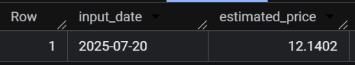
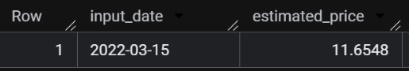
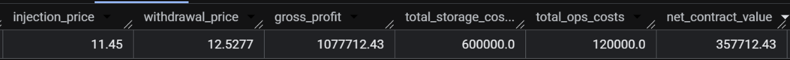
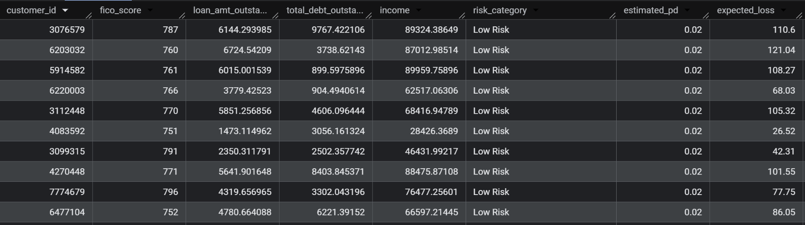
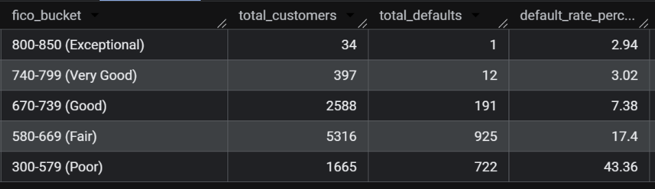

Virtual Job Simulator
J.P. Morgan Data Analytics

Figure 1: Full dashboard view.
Virtual Job Simulator
Figure 1: Full dashboard view.
As a Quantitative Researcher, I developed a credit risk model to predict mortgage defaults and optimized FICO score quantization for machine learning inputs.
SQL (BigQuery): Engineered a credit risk pipeline to analyze 10,000+ loan records and perform FICO score optimization
To ensure the data was clean, consistent, and ready for analysis, I followed these steps:
While auditing the initial ingestion of 5.7M rows, I noticed the total volume looked lower than expected. To hunt down the leak, I ran a COUNT(*) grouped by month, and there it was, the April 2025 dataset (202504-divvy-tripdata) had completely failed to append during the automated load.
The Solution: Instead of re-running the entire automation, I performed a manual schema-matched upload specifically for the April records. To be safe, I followed this up with a SQL validation script to cross-reference the counts and ensure I hadn't introduced any duplicates. This extra step was vital; without that April data, my seasonal trend analysis would have shown a "fake" dip in spring ridership, leading to totally inaccurate business advice.
-- SET YOUR DATE HERE
DECLARE input_date DATE DEFAULT '2025-05-15';
WITH historical AS (
SELECT Dates, Prices FROM `case-studies-478607.jpmorgan_analysis.nat_gas`
),
-- 1. Calculate the Trend & Seasonality for the Forecast
trend_calc AS (
SELECT
(COUNT(*) * SUM(UNIX_DATE(Dates) * Prices) - SUM(UNIX_DATE(Dates)) * SUM(Prices)) /
(COUNT(*) * SUM(POW(UNIX_DATE(Dates), 2)) - POW(SUM(UNIX_DATE(Dates)), 2)) AS slope,
AVG(Prices) - ((COUNT(*) * SUM(UNIX_DATE(Dates) * Prices) - SUM(UNIX_DATE(Dates)) * SUM(Prices)) /
(COUNT(*) * SUM(POW(UNIX_DATE(Dates), 2)) - POW(SUM(UNIX_DATE(Dates)), 2))) * AVG(UNIX_DATE(Dates)) AS intercept,
AVG(Prices) as overall_avg
FROM historical
),
seasonal_averages AS (
SELECT EXTRACT(MONTH FROM Dates) AS m_num, AVG(Prices) AS m_avg FROM historical GROUP BY 1
),
-- 2. Combine Historical and Forecasted into one Master List
full_curve AS (
SELECT Dates, Prices FROM historical
UNION ALL
SELECT
f_date,
(slope * UNIX_DATE(f_date) + intercept) + (m_avg - (SELECT overall_avg FROM trend_calc))
FROM UNNEST(GENERATE_DATE_ARRAY('2024-10-31', '2025-09-30', INTERVAL 1 MONTH)) AS f_date
CROSS JOIN trend_calc
JOIN seasonal_averages ON EXTRACT(MONTH FROM f_date) = m_num
),
-- 3. Find the two closest dates to our 'input_date'
bounds AS (
SELECT
Dates AS start_date,
Prices AS start_price,
LEAD(Dates) OVER(ORDER BY Dates) AS end_date,
LEAD(Prices) OVER(ORDER BY Dates) AS end_price
FROM full_curve
)
-- 4. Final Interpolation Calculation
SELECT
input_date,
ROUND(start_price + (end_price - start_price) * (DATE_DIFF(input_date, start_date, DAY) / NULLIF(DATE_DIFF(end_date, start_date, DAY), 0)), 4) AS estimated_price
FROM bounds
WHERE input_date >= start_date AND input_date < end_date;

Figure 2: Historical date: 2022-03-15

Figure 3: Forcasted date: 2025-07-20
-- 1. SET CONTRACT PARAMETERS
DECLARE injection_date DATE DEFAULT '2024-06-15';
DECLARE withdrawal_date DATE DEFAULT '2024-12-15';
DECLARE quantity FLOAT64 DEFAULT 1000000; -- 1M MMBtu
DECLARE storage_cost_per_month FLOAT64 DEFAULT 100000;
DECLARE injection_withdrawal_cost_per_unit FLOAT64 DEFAULT 0.01;
DECLARE transport_cost FLOAT64 DEFAULT 50000;
-- 2. BUILD THE COMPLETE PRICE CURVE
WITH historical AS (
SELECT Dates, Prices FROM `case-studies-478607.jpmorgan_analysis.nat_gas`
),
trend_calc AS (
SELECT
(COUNT(*) * SUM(UNIX_DATE(Dates) * Prices) - SUM(UNIX_DATE(Dates)) * SUM(Prices)) /
(COUNT(*) * SUM(POW(UNIX_DATE(Dates), 2)) - POW(SUM(UNIX_DATE(Dates)), 2)) AS slope,
AVG(Prices) - ((COUNT(*) * SUM(UNIX_DATE(Dates) * Prices) - SUM(UNIX_DATE(Dates)) * SUM(Prices)) /
(COUNT(*) * SUM(POW(UNIX_DATE(Dates), 2)) - POW(SUM(UNIX_DATE(Dates)), 2))) * AVG(UNIX_DATE(Dates)) AS intercept,
AVG(Prices) as overall_avg
FROM historical
),
seasonal_averages AS (
SELECT EXTRACT(MONTH FROM Dates) AS m_num, AVG(Prices) AS m_avg FROM historical GROUP BY 1
),
full_curve AS (
SELECT Dates, Prices FROM historical
UNION ALL
SELECT
f_date,
(slope * UNIX_DATE(f_date) + intercept) + (m_avg - (SELECT overall_avg FROM trend_calc))
FROM UNNEST(GENERATE_DATE_ARRAY('2024-10-31', '2025-09-30', INTERVAL 1 MONTH)) AS f_date
CROSS JOIN trend_calc
JOIN seasonal_averages ON EXTRACT(MONTH FROM f_date) = m_num
),
-- 3. INTERPOLATE PRICES
bounds AS (
SELECT
Dates AS start_date, Prices AS start_price,
LEAD(Dates) OVER(ORDER BY Dates) AS end_date,
LEAD(Prices) OVER(ORDER BY Dates) AS end_price
FROM full_curve
),
interpolated_prices AS (
SELECT
input_date,
start_price + (end_price - start_price) * (DATE_DIFF(input_date, start_date, DAY) / NULLIF(DATE_DIFF(end_date, start_date, DAY), 0)) AS price
FROM bounds, UNNEST([injection_date, withdrawal_date]) AS input_date
WHERE input_date >= start_date AND input_date < end_data
),
-- 4. AGGREGATE RESULTS
contract_values AS (
SELECT
MAX(CASE WHEN input_date = injection_date THEN price END) AS buy_price,
MAX(CASE WHEN input_date = withdrawal_date THEN price END) AS sell_price
FROM interpolated_prices
)
-- 5. FINAL CALCULATION
SELECT
ROUND(buy_price, 4) AS injection_price,
ROUND(sell_price, 4) AS withdrawal_price,
ROUND((sell_price - buy_price) * quantity, 2) AS gross_profit,
ROUND(DATE_DIFF(withdrawal_date, injection_date, MONTH) * storage_cost_per_month, 2) AS total_storage_costs,
ROUND((quantity * injection_withdrawal_cost_per_unit * 2) + (transport_cost * 2), 2) AS total_ops_costs,
ROUND(((sell_price - buy_price) * quantity)
- (DATE_DIFF(withdrawal_date, injection_date, MONTH) * storage_cost_per_month)
- (quantity * injection_withdrawal_cost_per_unit * 2)
- (transport_cost * 2), 2) AS net_contract_value
FROM contract_values;

Figure 4: Results.
SELECT
customer_id,
fico_score,
loan_amt_outstanding, -- Fixed column name
total_debt_outstanding,
income,
-- 1. Categorizing Risk Tiers
CASE
WHEN fico_score >= 750 THEN 'Low Risk'
WHEN fico_score >= 670 THEN 'Medium Risk'
WHEN fico_score >= 580 THEN 'High Risk'
ELSE 'Critical Risk'
END AS risk_category,
-- 2. Estimating Probability of Default (PD)
CASE
WHEN fico_score >= 750 THEN 0.02
WHEN fico_score >= 670 THEN 0.08
WHEN fico_score >= 580 THEN 0.20
ELSE 0.45
END AS estimated_pd,
-- 3. Calculating Expected Loss (assuming 10% recovery as per task)
-- Formula: (Loan Amount * PD) * (1 - Recovery Rate)
ROUND((loan_amt_outstanding * (
CASE
WHEN fico_score >= 750 THEN 0.02
WHEN fico_score >= 670 THEN 0.08
WHEN fico_score >= 580 THEN 0.20
ELSE 0.45
END
)) * 0.9, 2) AS expected_loss
FROM `case-studies-478607.jpmorgan_analysis.loan_data`;

Figure 5: Results
SELECT
CASE
WHEN fico_score >= 800 THEN '800-850 (Exceptional)'
WHEN fico_score >= 740 THEN '740-799 (Very Good)'
WHEN fico_score >= 670 THEN '670-739 (Good)'
WHEN fico_score >= 580 THEN '580-669 (Fair)'
ELSE '300-579 (Poor)'
END AS fico_bucket,
COUNT(*) AS total_customers,
SUM(`default`) AS total_defaults,
ROUND(AVG(`default`) * 100, 2) AS default_rate_percentage
FROM `case-studies-478607.jpmorgan_analysis.loan_data`
GROUP BY 1
ORDER BY fico_bucket DESC;

Figure 6: First 10 Results

Impact: Marketing should pivot from 'lifestyle' ads to 'commuter efficiency' messaging for high-frequency casual users.

Impact: Conversion campaigns should be geo-fenced to residential 'commuter-belt' stations rather than tourist hotspots.

Impact: The 'Membership Drive' should be launched in April (coinciding with the April data surge identified in the audit) to capture riders as they form new habits.
Based on the analysis, here are the top three strategic recommendations to convert casual riders into annual members:
This project was a deep dive into the realities of large-scale data analysis. Beyond mastering BigQuery SQL and Tableau, I learned the importance of Data Auditing—specifically how to identify and recover from ingestion errors like the missing April dataset.
By making strategic decisions to preserve "imperfect" data (handling 1.2M NULLs) rather than deleting it, I was able to provide a more accurate representation of Cyclistic’s total system usage. This case study reflects my ability to bridge the gap between technical data cleaning and actionable business strategy.
Loading projects...